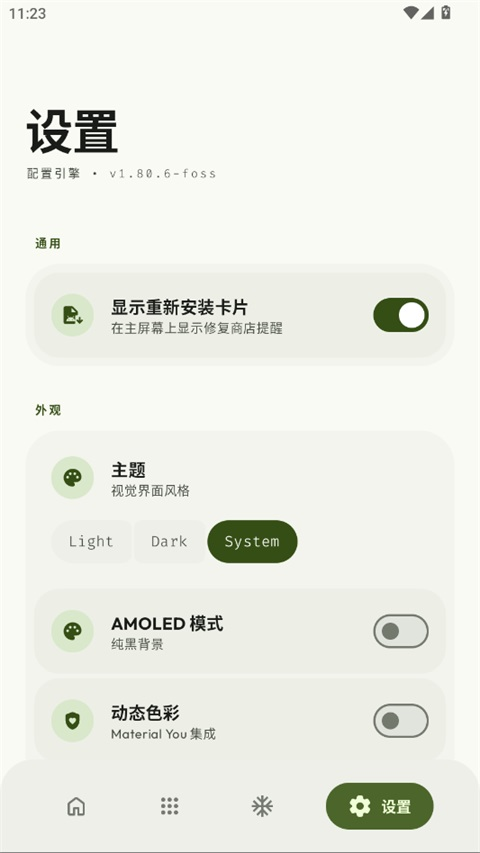
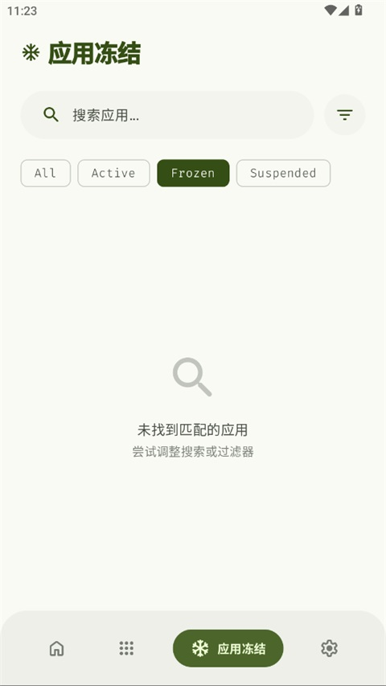

安卓新机到手半小时搞定预装清理——Thor + Shizuku 工作流全记录
每年换两三台安卓测试机，以前清预装要逐个翻设置页，现在一条 Thor + Shizuku + Tasker 的流程链，半小时搞定冻结、开机恢复和定期巡检。
我每年手上会过两三台安卓测试机，品牌从小米到 OPPO 到三星都有，每次开箱第一件事永远是清预装——电商、支付、新闻推送那堆系统级应用，留着占内存还弹通知，禁用又得一部一部来。以前的流程是：开发者选项开 USB 调试 → 电脑插线 → adb shell pm disable-user 敲一遍包名清单 → 重启验证，中间 adb 断连重试过无数次，包名打错一个就得翻日志排查，一台新机从头清完少说一小时。
后来我换成 Thor——它的官网主打免 Root 的系统应用冻结，配合 Shizuku 走无线权限，再用 Tasker 把开机自动恢复和每周巡检补上，整条链跑通后新机到手半小时就能干干净净用起来。这套流程我已经在十几台机器上复现过，今天把每个衔接点拆开讲清楚。
旧流程卡在哪
先说清楚为什么以前那套 adb 命令行方式不行。核心痛点有三个：
一是物理连接依赖。 每台新机第一次都得找 USB 线、等驱动、确认 adb devices 能识别，跨品牌 ROM 的驱动兼容性还不一样，三星 Kies 有时候会抢端口。
二是包名维护成本。 我存了一份各品牌预装包名的 Markdown 清单，但 MIUI 大版本更新后包名会变，ColorOS 还会在系统应用里塞第三方服务框架，手动维护是无底洞。
三是没有巡检机制。 adb 跑一次就完了，重启或者 OTA 升级后部分禁用会被还原，没有定期检查就会悄悄漏回来几个应用。
新流程：三段式拼接
Thor 插进来之后整个流程变成三段——权限初始化 → 批量冻结 → 自动维护，每一段和上下游工具的衔接点我都标出来。
第一段：权限初始化（10 分钟，一次性）
Thor 装起来很简单——下载页直接拿 APK，装完打开就能进设置页。它的免 Root 模式依赖 Shizuku，我现在只用无线调试配对这一种方式，USB ADB 那套只在 ROM 厂商隐藏无线调试时才拿出来。具体走法：
- 开发者选项开无线调试 → 拿配对码和 IP:端口
- Shizuku 里输入配对码 → 点启动 → 授权 ADB 调试
- Thor 设置页切到 Shizuku 权限模式 → 自动检测连接成功
这一段的衔接点在第三步：Thor 设成 Shizuku 之后，后面所有冻结/解冻/批量操作都不再需要电脑，手机本地就能完成。我第一次配完之后就再也没插过 USB 线。
无线调试配对的坑主要在 ROM 差异上——小米 MIUI 部分版本把无线调试藏在「开发者选项」二级菜单最底部，OPPO ColorOS 有时候配对超时需要反复刷新配对码。Thor文档里专门列了各品牌的已知问题和替代方案，踩过一次坑之后后面都是直线。

第二段：批量冻结（15 分钟/台）
权限通了之后就进入 Thor 应用列表页——这是整条链的核心工作台。我现在的操作顺序是：
- 打开 Thor → 应用列表标签
- 点右上角菜单 → 高级筛选 → 选「系统应用」
- 用搜索框逐个定位清单里的包名（Thor 支持应用名和包名混合模糊搜索，比翻设置页快太多）
- 长按卡片进入多选模式 → 全选标记的应用 → 点底部「冻结」按钮
这一段和旧流程相比，少了两次手动复制粘贴包名，也不用维护那份 Markdown 清单——Thor 会自动扫出所有系统应用，我只需要逐个点选要禁的。多选模式下可以一口气冻掉十几个应用，不用一个个确认弹窗。
冻结完之后我会切到 Thor 的冻结标签页做一次巡检——这个页面专门展示已禁用应用，顶部有 All/Active/Frozen/Suspended 四态过滤器，默认进的就是 Frozen 视图。如果某个应用显示在 Suspended 而不是 Frozen，说明这个设备的 Shizuku 权限只能做到暂停，Thor 会自动标出来，我单独记一下以后换 Root 权限补。

第三段：自动维护（零耗时长期运行）
这一段靠 Tasker 补，Thor 本身不带自动任务调度，但它的冻结能力可以被外部脚本调用。我在 Tasker 里配了两个定时任务：
- 开机 Shizuku 自动恢复：Shizuku 重启后不会自动启动，Tasker 监听开机完成事件 → 延迟 30 秒（等系统稳定）→ 用 secure settings 插件触发无线调试配对自动重连 → 拉起 Shizuku 服务
- 每周巡检：周日晚 23:00，Tasker 启动 Thor → 调用 Shizuku 权限检查冻结状态 → 如果发现被还原的应用（OTA 升级偶发），自动重新冻结 → 写一条本地日志
这两个任务的衔接点在于：Tasker 不直接调 Thor 的冻结 API（Thor 暂时没开放），而是靠 Shizuku 守护进程持续在线来保证权限可用，冻结动作还是我手动触发，但巡检和权限恢复自动化了。
实操里最容易断链的两个环节
断链一：Shizuku 无线调试配对过期
配对码有时效性，部分 ROM 会在 WiFi 切换后重置无线调试端口。我踩过好几次这个坑，总结了一个判断逻辑：如果 Thor 设置页突然显示「Shizuku 未连接」，先看 Shizuku 应用本身的状态——如果是「配对已断开」，就得重新走一遍配对码流程。Tasker 的开机恢复只能处理已配对状态的重连，配对断开了还是得手动来一次。
断链二：OTA 升级还原禁用
安卓厂商的系统更新有时候会强行还原被禁用的预装应用，我在 MIUI 和 One UI 上都碰到过。Thor 的冻结标签页能快速发现异常——如果某天打开 Frozen 列表发现之前冻的应用消失了，那就是 OTA 干的，直接回到第二段批量冻结重跑一次。每周巡检的 Tasker 任务能在 24 小时内发现这种情况，不会漏太久。
效果和边界
效果说可数的：现在清一台新机预装从一小时压到半小时以内，少了约 20 次 USB 插拔和 adb 命令敲写。每周巡检自动跑，不用我记得。Shizuku 无线配对之后整台手机除了 OTA 升级场景不再需要接电脑。
但这套流程也有边界：Shizuku 只支持 Android 11 以上，老机器只能走 Root 或 adb 命令行；部分厂商 ROM 确实找不到无线调试入口（早期 HarmonyOS、一些小众品牌），只能退回 USB 方案；Thor 目前没有导出冻结清单的功能，如果换手机时想把冻结配置迁移过去，还得手动抄一遍应用名。
仓库资料同步
Thor 的 APK 和配套资料在三个代码仓库同步维护，GitHub 是主版本，Gitee 和 GitCode 做国内镜像，遇到某个仓库访问慢的时候换一个就行。